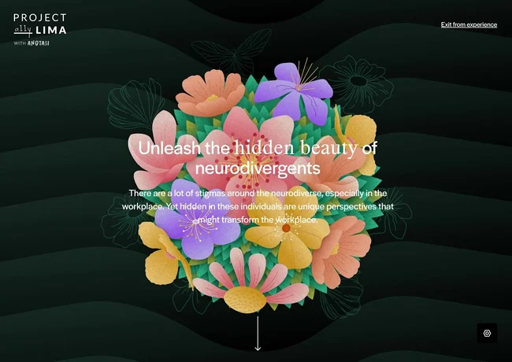

Building even a simple HTML website can feel overwhelming if you haven’t done it
before. In my
experience, diving
into examples can help make it feel less daunting.

A successful HTML page example provides inspiration as you craft your own site
and an example
of
what a
successful site looks like in practice. That’s why it’s
worthwhile to take a look.
"One of the cool things about learning HTML is that you can take inspiration from
any of the
millions of public
websites up and running right now. And not just that
— you can also peek at the underlying HTML of
these
websites to find out how
they’re built, then use those same techniques to build your own projects.
"In this post, I‘ll share some stunning website examples that leverage HTML to its
fullest
potential. Beyond
that, you’ll also learn about the basics of HTML websites,
how to build your own simple HTML website,
and
some
ideas for different types of
websites you might want to create. By the end of this post, you’ll have a
robust
understanding of the best HTML page examples as you embark on your journey to
craft your own.
"HubSpot's Free Website
Builder
Create and customize your own business website with an
easy drag-and-drop website
builder.
Build a website without
any coding skills.
Pre-built themes
and templates.
Built-in marketing tools
and features.
And more!
Understanding the Basics of HTML
Websites
HTML, which stands for Hypertext Markup Language is the primary language of
the
World Wide Web. An
HTML
document sets the content and structure of a web
page. When you view a page in your browser, what
you’re
looking
at is your
browser’s interpretation of an HTML file that was retrieved from a web server.
"HTML is almost always used in conjunction with two other front-end languages:
CSS and
JavaScript.
CSS (Cascading
Style Sheets) is a language that controls
the styling of a web page, including colors, fonts,
and
layouts.
JavaScript is a
programming language that enables more complex client-side
features
like interactive
elements
and animations.
"The most recent numbered release of HTML is HTML5. Released in 2008, HTML5
notably
contained several
improvements to handle multimedia content like audio
and video and semantically rich
elements to describe
page
structure.
"Going forward, there will be no more numbered version numbers for HTML. That
means there will
be no
HTML6, and
HTML5 is now called “HTML.” However, a
number of improvements and enhancements have been released since
HTML5
came out in 2008.
"If you want to know more about HTML and how to write it, I recommend starting
with our ultimate guide to HTML.
You’ll learn everything you need to know to
understand this post in its entirety.
"Because every website is written in HTML, regardless of the complexity of the site
or the
number of
technologies
involved, it’s a good idea to immerse yourself in it
And yes, this is true even if the website uses
server-side
languages like PHP (such
WordPress). With a tool like WordPress, the web server will
process
the PHP
and
query the site's database to generate the finished HTML document to deliver
to visitors'
browsers.
"You can take any page and lift up the hood to see the HTML, CSS, and JavaScript
code that bring
it
to life.
"Later in this post, I’ll review some of the ways designers and developers harness
HTML
in their creative works.
50 Free Coding Templates
"Free code snippet templates for HTML, CSS, and
JavaScript -- Plus access to GitHub.

Navigation Menus &
Breadcrumbs Templates
Button Transition
Templates
CSS Effects Templates
And more!
A Few Ideas for HTML Websites
To get comfortable with HTML (along with CSS and JavaScript), I think it’s a good
idea for you
to
create a
website or two from scratch.
Even building a relatively simple HTML website can help you learn how HTML
works and provide you
with a solid
foundation before you move on to more
advanced projects.
"Here are some ideas for beginner-friendly simple HTML projects you can create:
- A personal website. Create a personal site that shows off your resume,
work
experience, interests, skills, and personality. You can return to this project and
revise over time as your skills develop.
- An informational site.Pick a topic you’re interested in, then code up a simple
website that teaches visitors about it. You can play around with various
technologies to enhance your storytelling — we'll share some examples below.
- A small business website or a non-profit website. You can volunteer to create
a website for a small local business in your area. Or, you can help a non-profit
and give it an online presence. - A blog. While there are many great blogging platforms out there, consider
making your own. A simple HTML website can work great for basic blogs. - A portfolio. Want to show off your other creative works? Try building a
portfolio, be it a photo gallery, a video showcase, or a collection of your
writing. The best part? We even have a step-by-step guide for beginners on
how to create a portfolio site with HTML.
To get started creating your first HTML site, I recommend following this excellent
tutorial from freeCodeCamp.
As you grow more comfortable with HTML basics, you can begin to branch out
into bolder, more
unique
design
choices. But still, even elaborate websites can
often be boiled down to a handful of HTML features
working
together to make a
cohesive experience.
Next, I’ll walk you through examples of HTML websites that use elements
creatively. I’ll also
help
unpack what
makes them tick.
HTML Website Examples
- Gloutir
- Canvas Study
- Melba Design Festival
- Understanding Neurodiversity
- Intelligent Video Solutions
- Caffeine Post
- Dumpling Delivery
- Make Your Move (Adidas)
- Take a Ride With Me
- Ayako Taniguchi
- Earth Eclipsed
- Pencilvania
- Mas Oyama
- La Guía de Cirugía Cardíaca

What I like: Gloutir is a design and development studio based out of Houston
Texas, that
features a
vibrant,
immaculately crafted website. While the hero
section isn‘t anything too crazy, you’ll experience tons
of
interesting effects as you
scroll down the page.
"At first glance, this site may look technically complex. However, you can achieve
most of the
effects with plain
HTML and CSS. While there’s an occasional
JavaScript-powered effect (for instance, animated text and a
card
slider), a lot of
this site’s appeal comes down to smart choices of colors, fonts, and images.
"It’s worth digging into the page's source code if you’re curious. For example, when
I checked
out
the code, I
could see that Gloutir used Webflow to build its site and
some of the different HTML techniques that
the
site
relies on.
"Check out our guide to the “inspect element” tool to learn how you can do the same.
"If you want to inspect the code of a website, my experience is that Chrome offers
the
best developer tools (like
“inspect element”). However, most other browsers
also offer developer tools.
"Pro Tip: Need help choosing a color scheme for your site? Here are a few I love.
 Image source
Image source
What I like: Joshua is an interactive designer who uses his own interactive
Joshua‘s
World
website
to
connect
with potential clients. Visitors start on a simple
welcome screen but can then enter the much more
engaging
Joshua’s World
interface.
Visitors can then “ride” around the world on a bicycle while checking out Joshua‘s
various
projects
and learning
more about his experience. I think it’s much more
engaging than a traditional portfolio that lists
projects
as
thumbnails. And, given
that Joshua is an interaction designer, I love how the design really shows off
what
he
can do.
While most of the basic content on Joshua‘s website is powered by pure HTML, the
interactive
elements rely on
JavaScript. Joshua also uses the Sanity content
management system to help him manage his site’s
content.
Pro Tip: Consider working with a web designer to create bespoke designs for
your
HTML site.
What I like: Ruby on Rails is a popular open-source development framework
developers can use to build
server-side web applications. The Ruby on Rails
website does a great job of communicating that with a
clean,
modern design.
I especially like how the website is able to keep things interesting with its color
and
typography choices,
rather than relying on more complex animations. The red
headings give a pop of color, while the actual
design is simple.
The entire site is pretty much just pure HTML with CSS styling. None of the effects
that you
see require
JavaScript. For example, the Ruby on Rails site creates
interesting hover effects using basic CSS.
I think that it‘s a great reminder that you don’t need fancy CSS and JavaScript
effects to
build a great
HTML website. Those elements can help in certain
situations, especially with engagement and
storytelling (as
many of my other
examples show). However, they are not a requirement to build an engaging website.
Pro Tip: Make your website more engaging with thoughtful CSS animations. Here
are some I love. (Don’t worry
— it’s not too tricky to learn!)
4.Understanding Neurodiversity
What I like: Project Lima is an inclusive design initiative that launched its
Understanding
Neurodiversity
project to educate the public about neurodivergent
individuals, how they operate in society, and some
common
myths associated
with these individuals.
I recommend giving this experience a full watch if you have the time. It’s
a touching blend
of illustration,
visual texture, music, sound effects, and
meaningful storytelling to
provide a better understanding of
neurodiverse
people.
In particular, the website’s use of scalable vector graphic (SVG) artwork is
stunning and adds a visual
framework for communicating the site’s information.
Each screen transitions smoothly to the next with
animated graphics. As far as
online storytelling goes, I think this is as good as it gets.
Pro Tip: Don’t forget that copy plays into the experience your users have on your
site. This
is something Understanding Neurodiversity does exceptionally well.
What I like:The HTML5 video element was another major step in making HTML
more robust,
with
the goal of
becoming the standard for playing video on web
pages.
Today, many websites employ this element for auto-playing videos, fullscreen
videos, and
video backgrounds.
Take this great example from Intelligent Video
Solutions — its homepage meets you with a full-width video background and
overlays text, graphics, and a gradient to smoothly transition you
down the
page.
If you want to achieve a similar effect on your site, the HTML5 video element is
the best way.
I think that
it’s a much cleaner alternative to, say, an embedded
iframe from YouTube on your page.
Pro Tip: For accessibility reasons, it’s a good idea to let users pause
videos and
also to let them choose
whether or not the video plays sound.
What I like: Caffeine Post is a post-production video studio that, as you might
guess,
also
makes great use
of the HTML video element. I love how the homepage
immediately confronts you with a chaotic but
immersive
video montage of the
company’s work and dares you to watch more.
The selected works page is a series of thumbnails, each itself a video element. You
can hover
your cursor
over a thumbnail to watch it play in a loop and click on it to
watch a longer video preview with sound.
Plus, you can filter the works by
category (commercial, film, etc.).
Pro Tip: Don’t neglect the power that video can have in immersing your users in
the world of
your site. The
best part is adding video to an HTML page example
is easy.
What I like: Microsites allow brands to experiment with new web design
techniques while
promoting a product.
Mailchimp’s Dumpling Delivery website is a
prime example of this: Visitors can play nine holes of
virtual
miniature golf
in an attempt to deliver dumplings to hungry customers.
Just about the entire experience is built around HTML canvas, with some
JavaScript magic
happening in the background to make the game dynamics
possible. Dumpling Delivery showcases the limits
of what you can
accomplish with
HTML and JavaScript with some expert help.
The only thing that I don't like is that the website can take a little longer to load
on slower connections.
However, this is expected, given how much interactivity is
going on with the site.
Pro Tip: I love how the music automatically pauses if a user opens another
window,
which I think reinforces
how interactivity is an integral part of the
experience.
What I like: Adidas made this microsite to promote the company’s global World
of Sports
headquarters in
Herzogenaurach, Germany. I like how it leverages video
and crisp images to help you experience the
space
from every angle.
"The website does a good job of putting visitors on a pretty defined path for the
whole
experience, starting
with a video (displayed with the HTML5 video element)
and following up with an image slideshow to
highlight
the best parts of working
for the company.
I also like that there's no scrolling down — everything happens with side
-to-side movement,
which I noticed
creates a linear feel to the storytelling experience.
Pro Tip: Sometimes, a larger site doesn’t necessarily mean a better one. This is a
great
example of using an
HTML microsite can help tell a structured, digestible
story about your brand.
What I like: Some websites use video to show, while others, like this example, use
it
to immerse. Created by
Danish videographer Nikolaj Juhlsen, the Take a Ride
With Me website experience drops you on the seat
of a
mountain bike as you’re
taken down treacherous trails across Europe.
That said, the homepage of this site does layer on some interesting cursor effects
and scrolling effects for
some added flair. For example, when you first land on the
site, the “Play” button follows your mouse
cursor
around, which I think creates an
interesting engagement effect (and also makes it easy for visitors to
start
the
experience).
Pro Tip: Experiment with different cursor effects to determine if adding one is
intuitive for your site or
if you’d be better off leaving it alone.